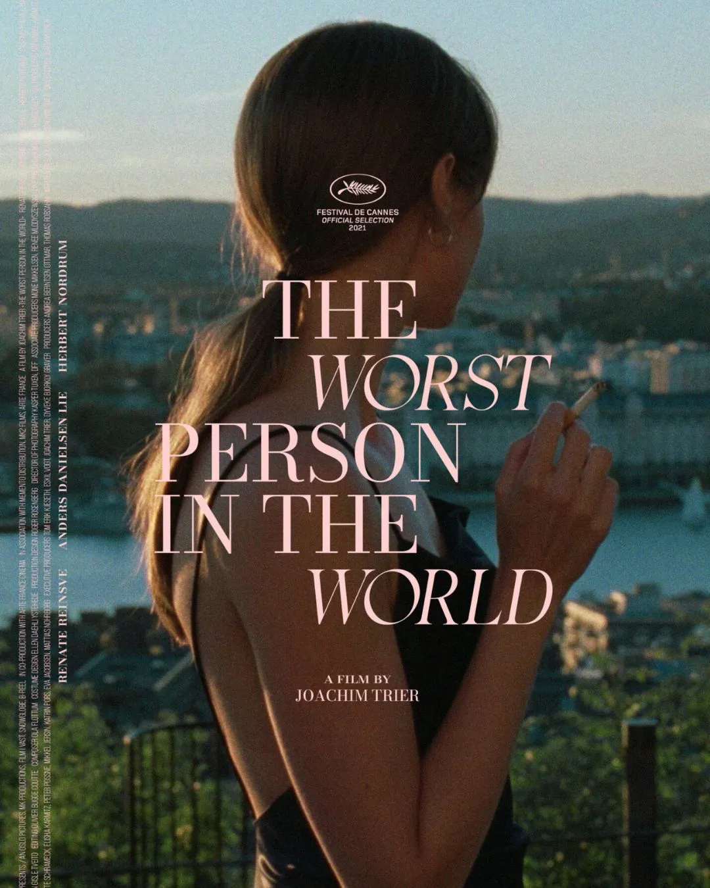

profilo
biografia
Mi chiamo Jekaterina Kanevskaja, per amici sono Kate.
Mi attraggono le cose che si distinguono dalle categorie abituali e che non seguono necessariamente le tendenze dominanti. Tendo a osservare le situazioni da prospettive diverse, per trovare le possibilità meno evidenti. Nel valutare un progetto, riconosco tre aspetti soggettivi: la capacità di produrre bellezza, la solidità del concetto e la qualità tecnica della sua realizzazione.
Il mio percorso attraversa comunicazione, arti visive e progettazione culturale, in contesti creativi e aziendali. Ho lavorato allo sviluppo e al coordinamento di progetti diversi, occupandomi di ricerca, contenuti, organizzazione e produzione. Un'esperienza trasversale che mi ha portata a confrontarmi con discipline, persone e linguaggi differenti, seguendo spesso il passaggio da un'idea alla sua realizzazione. A volte, è proprio nella possibilità di attraversare discipline diverse e metterne in relazione le competenze che si costruisce un'identità professionale propria.
Nel lavoro alterno intuizione e organizzazione, convivo con il mio modo di pensare simbolico e allo stesso tempo pragmatico. Credo nell'importanza di esprimere le proprie idee con precisione, ascoltare punti di vista diversi e affrontare apertamente anche le divergenze.
formazione
2016 - 2019
Università degli Studi di Urbino Carlo Bo
Laurea in New Media, Informazione e Pubblicità.
2019 - 2021
Accademia di Belle Arti di Brera
Laurea magistrale in Didattica Multimediale e Comunicazione dell'Arte.
2022 - 2023
MEET Digital Culture Center
Executive Master in Digital Curatorship for Creative Industries.
2025
VM Academy - International Flower Design School
Percorso professionalizzante in Floral Design.
in corso
confesso che:

Prenderei la vita in giro con Phoebe Waller-Bridge.

Se fossi una disciplina, sarei l'origami.

Per ripristinarmi metterei Rose Rouge di St Germain.

Questo è il poster del film che decora le pareti di casa mia.